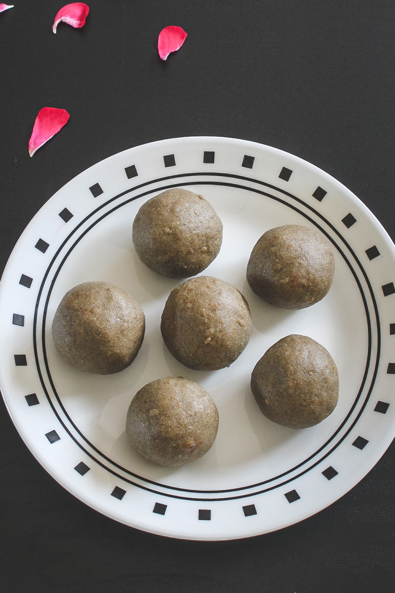

Lasagna

Description
A nutritious sweet, eaten in lots of festivals and can be cooked very quickly.
Ingredients
- Pearl millet flour
- Jaggery
- Ghee
Steps
- Take bajra flour and jaggery in a bowl.
- Rub them with your fingers to break jaggery lumps and mix both really well. It will take good 5-7 minutes.
- Melt the ghee in a small saucepan or in the microwave. Ghee should be warm to touch (not hot). Add into flour-jaggery mixture.
- Again mix well with your fingertips. If it looks dry then add ½ tablespoons of ghee at a time, mix and see
- Make walnut-sized balls out of it. once ghee cools down completely it becomes more firm.